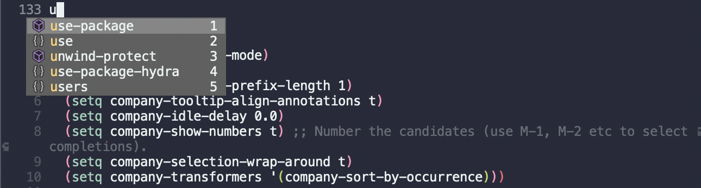
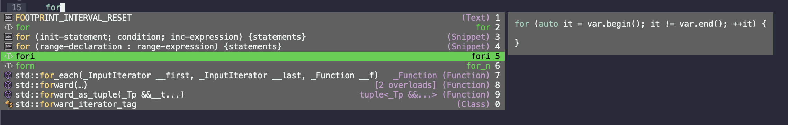
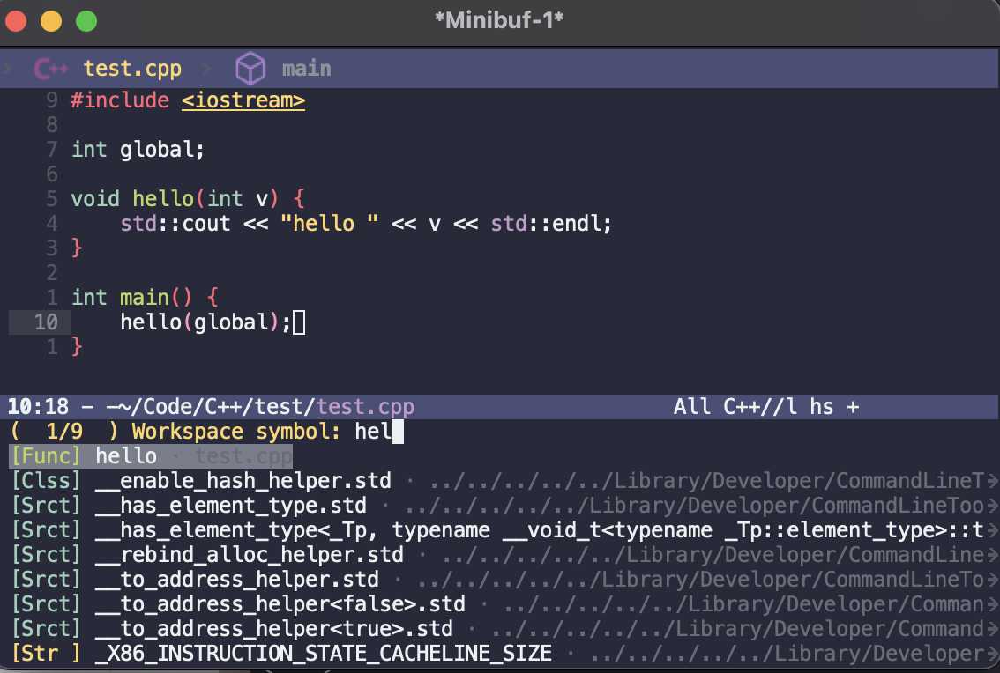
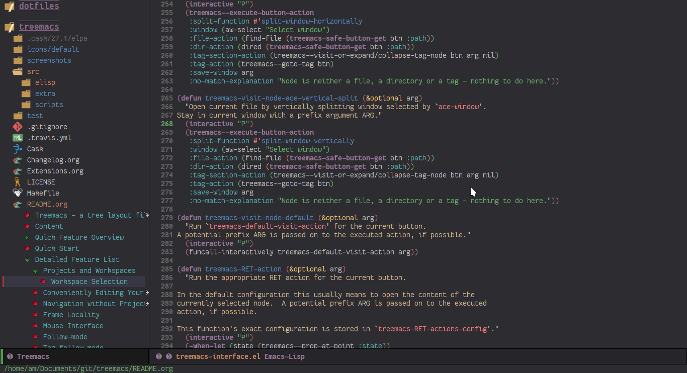

插件：编程开发类
经过了两轮的插件安装，我们已经具备了一个基础功能完备的编辑器了，但是说到底，代码编辑器最重要的目的便是用来编程了。本篇将开始对编程相关的插件进行介绍，但是我们知道编程领域十分广阔，本教程不可能涉及全部，所以本篇会介绍其中最关键的核心逻辑，只要领略了它，读者就可以自由变换、拓展到其它领域中去。
编辑器最基本需要三大方面的功能：
- 对编程进行辅助：自动补全、语法检查、代码跳转等。
- 项目管理、编译、运行、调试、版本控制等。
- 与相关开发工具结合等。
其中第三点不同的领域有不同的方案，每个人也有每个人的偏好，难以概括，本文不会进行深入的介绍，但相信读者经过了本教程的学习，完全有能力根据自己的需求进行探索。
自动补全
基本配置
Emacs 最广为使用的补全插件便是 company-mode，其官方主页上已有详细的说明。可进行如下配置：
1(use-package company
2 :ensure t
3 :init (global-company-mode)
4 :config
5 (setq company-minimum-prefix-length 1) ; 只需敲 1 个字母就开始进行自动补全
6 (setq company-tooltip-align-annotations t)
7 (setq company-idle-delay 0.0)
8 (setq company-show-numbers t) ;; 给选项编号 (按快捷键 M-1、M-2 等等来进行选择).
9 (setq company-selection-wrap-around t)
10 (setq company-transformers '(company-sort-by-occurrence))) ; 根据选择的频率进行排序，读者如果不喜欢可以去掉
安装后，输入前缀即可弹出自动补全。用 M-p 和 M-n 上下选择， Meta 键 \+ 一个数字选择相应标号的备选项。
此外，如果读者使用图形界面，可以再安装一个 company-box 用以显示图标：
1 (use-package company-box
2 :ensure t
3 :if window-system
4 :hook (company-mode . company-box-mode))
TabNine - AI 自动补全
Emacs 中自然也可以使用更加时髦的 AI 自动补全工具，例如 TabNine。 TabNine 是一个比较通用的自动补全工具，可以为许多编辑器提供支持，Emacs 当然不会掉队。根据 TabNine for Emacs 中的指导，我们配置一下即可：
1(use-package company-tabnine
2 :ensure t
3 :init (add-to-list 'company-backends #'company-tabnine))
随后，重启 Emacs，输入命令： M-x company-tabnine-install-binary ，来安装 TabNine 的后台程序。之后就可以正常使用了。但是总的来说，AI 插件会导致偶尔的高 CPU 占用，如果电脑硬件性能不佳，建议尽量关闭后台训练功能，或者是直接使用传统补全插件就好。
TabNine 的设置页面只需要在任意位置输入： tabnine::config ，随后会弹出一个浏览器窗口显示 TabNine 的相关设置。
Tip 2： TabNine 学生认证可以免费获得 TabNine Pro 的使用资格，包括更多的备选项等。
代码片段模板
IDE 通常有代码片段模板，可以快速展开常用代码，例如 C/C++ 语言中输入了 “for” 之后按下 <TAB> ，会展开出形如 for (init-statement; condition; inc-expression) 这样的结果。在 Emacs 中我们可以使用插件 yasnippet 来完成这一任务。
1(use-package yasnippet
2 :ensure t
3 :hook
4 (prog-mode . yas-minor-mode)
5 :config
6 (yas-reload-all)
7 ;; add company-yasnippet to company-backends
8 (defun company-mode/backend-with-yas (backend)
9 (if (and (listp backend) (member 'company-yasnippet backend))
10 backend
11 (append (if (consp backend) backend (list backend))
12 '(:with company-yasnippet))))
13 (setq company-backends (mapcar #'company-mode/backend-with-yas company-backends))
14 ;; unbind <TAB> completion
15 (define-key yas-minor-mode-map [(tab)] nil)
16 (define-key yas-minor-mode-map (kbd "TAB") nil)
17 (define-key yas-minor-mode-map (kbd "<tab>") nil)
18 :bind
19 (:map yas-minor-mode-map ("S-<tab>" . yas-expand)))
20
21(use-package yasnippet-snippets
22 :ensure t
23 :after yasnippet)这里笔者的配置略微复杂，主要有两个考虑：
- 默认情况，yasnippet 当光标位于一个可展开的字符串后面时，按下
<tab>键会自动展开。然而，<tab>键在 Emacs 中本身就有着一个对齐缩进的作用，当我们写代码时，光标不论在一行代码的哪里，只要我们按下<tab>，就会将这行代码缩进到最合理的位置。于是这会造成一个误判，例如我们有个 for 循环，我们希望用<tab>自动缩进这行代码，而光标恰好处于 for 的后面，这时会触发 yasnippet 再次将 for 展开。笔者采取的方案是由用户显式调用 yasnippet 的展开，于是解绑了<tab>键，换成了S-<tab>（也就是Shift+<tab>）。 - 我们希望 yasnippet 可以与自动补全协同，让自动补全也为我们补全 yasnippet 代码片段。默认情况，我们需要显式调用
company-yasnippet来查看专属 yasnippet 的自动补全。有些读者也许偏爱这一方式，那么就请去掉:config的前两句用来设置 company-backends 的代码。
第二个 use-package 所安装的 yasnippet-snippets 是一个模板集合，里面包含了常见的模板。读者也可以自定义模板，参考
yasnippet 的主页即可。
最终效果图如下（还混用了下文提到的 lsp 插件）：

文本展开
Emacs 还有一个非常实用的补全小功能 hippie 。 dabbbrev 与之功能相似，二者都是 Emacs 自带的功能。默认 M-/ 键就被绑定到了 dabbrev-expand 函数。笔者选择使用前者，替换掉了这个快捷键：
1(global-set-key (kbd "M-/") 'hippie-expand)
当我们输入几个字符前缀，然后按下 M-/ 调用 hippie-expand 函数，它会根据前缀匹配后面的内容。不同于普通的代码补全，它的补全还包括了文件名、elisp 函数名等。它的补全规则不包含语法分析，而是纯文本补全，很适用于我们写一些重复性的相似代码/其它文本的场合。
语法检查
语法检查有两个主流插件，一个是 flycheck，一个是 flymake，笔者个人感觉 flycheck 使用的人更多。
flycheck 是一个对接 Emacs 和语法检查程序（也就是 linting）的插件。官网提供的方案是全局开启 flycheck ：
1(use-package flycheck
2 :ensure t
3 :init (global-flycheck-mode))
笔者认为全局开启略有不妥。我们可以使用 hook 来指定什么情况下启动 flycheck ，例如只在编程时使用：
1(use-package flycheck
2 :ensure t
3 :config
4 (setq truncate-lines nil) ; 如果单行信息很长会自动换行
5 :hook
6 (prog-mode . flycheck-mode))
那么， flycheck 已就绪，特定语言的语法检查程序要如何安装呢？ flycheck 的主页上已为你列好各种编程语言对应的语法检查程序列表，其中包含了相应的链接。
例如，写 Python 的话，我们可以使用 python-flake8 或者 pylint。 例如使用 pylint 的话，在 Ubuntu 上可以用 apt 进行安装，在 macOS、Windows 上可以用 pip 来进行安装。
编译型语言通常安装好编译器即可使用。例如 C/C++、Rust 安装好 gcc/clang、rustc 就可以了。
flycheck 对 Windows 没有官方支持，但官网中提到也可以有方式使用。不过，在 Windows 上用 Emacs 做开发应该很少见吧 :-)。
代码分析
这一功能是指通过语法分析来进行诸如寻找函数和变量的定义、引用等等与编程语言本身相关的功能。传统方法中，每种语言都有一个专门为其设计的插件，例如 C/C++ 开发会用一些传统的 CEDET，gtag 等插件，Python 则用 elpy。但这类插件由于和编辑器直接耦合，完全由插件开发者控制，更新维护不一定及时，bug 也会较多。因此，笔者推荐使用微软为 VSCode 设计的 Language Server Protocol (LSP) 来完成这一任务。随着 LSP 发展壮大，它已成为一个开放的、统一的标准了，可以供 Emacs 使用。
LSP 将代码分析解耦合为前端（即编辑器提供的功能，语言无关）和后端（语法分析，语言相关）两部分，二者通过一个规定好的协议来通信，也就是 LSP 协议，这样一来，编辑器开发者只需要做好前端部分，也就是 LSP client，后端的语言相关部分由语言开发者完成，称为 LSP server，分工明确，效率更高，体验也就会好很多。
为 Emacs 提供 LSP 的插件有 lsp 和
eglot，相对来说使用 lsp 的人更多相对更稳定，本节将介绍 lsp 插件，及其相关的组合插件。 lsp 应当与下文介绍的 projectile 一起使用。此外，这里的 lsp 只是前端部分， 后端需要单独安装，有的时候可以直接通过命令 lsp-install-server 让 lsp 为你自动安装，或者也可以手动安装你偏爱的 LSP server，下文“语言相关配置”中会介绍几个笔者常用语言的典型配置。
首先根据其官网，我们就可以有一个最基础的配置：
1(use-package lsp-mode
2 :ensure t
3 :init
4 ;; set prefix for lsp-command-keymap (few alternatives - "C-l", "C-c l")
5 (setq lsp-keymap-prefix "C-c l"
6 lsp-file-watch-threshold 500)
7 :hook (lsp-mode . lsp-enable-which-key-integration) ; which-key integration
8 :commands (lsp lsp-deferred)
9 :config
10 (setq lsp-completion-provider :none) ;; 阻止 lsp 重新设置 company-backend 而覆盖我们 yasnippet 的设置
11 (setq lsp-headerline-breadcrumb-enable t)
12 :bind
13 ("C-c l s" . lsp-ivy-workspace-symbol)) ;; 可快速搜索工作区内的符号（类名、函数名、变量名等）
这里区别于官网写了很多的 hooks，笔者选择将这些 hooks 和语言具体的配置放在一起，详见下文“语言相关配置”。当然读者也可以选择与官网保持一致，并没有本质区别，只是组织配置代码的逻辑不同。另外官网相应的 lsp 命令笔者使用的是 lsp-deferred 替代，主要区别是 lsp-deferred 会推迟 lsp 服务的启动直到文件完全被显示出来，使用这个的主要目的是为了避免在文件数量过多的大项目造成 LSP 服务端过载。
(lsp-mode . lsp-enable-which-key-integration) 这句是让 lsp 与我们先前介绍过的 which-key 插件能够协作。最后一句让 lsp 为我们显示一下 breadcrumb，当我们完全配置好后，打开一个项目中的文件时，会在文件的最上面显示该文件的路径，这个被称为 breadcrumb。
随后，我们如果希望有更现代的图形化的支持，例如光标停留在一个变量或者函数时，显示相关的定义缩略信息、文档注释等，那么我们可以再安装一个 lsp-ui 插件，并做如下配置：
1(use-package lsp-ui
2 :ensure t
3 :config
4 (define-key lsp-ui-mode-map [remap xref-find-definitions] #'lsp-ui-peek-find-definitions)
5 (define-key lsp-ui-mode-map [remap xref-find-references] #'lsp-ui-peek-find-references)
6 (setq lsp-ui-doc-position 'top))
这几句的主要目的是替换本来的部分快捷键映射，由 lsp-ui 来进行接管，它同时为我们提供了一些跳转功能。这样我们可以使用 M-. 来寻找符号的定义，用 M-? 来寻找符号的引用。最后一句配置了 lsp-ui-doc （也就是刚刚提到的符号信息弹窗）在窗口上方显示，虽然很多现代编辑器都是显示在光标所在位置，但那会遮挡代码，有时十分惹人厌烦，所以一般会设置成显示在上方 top 或下方 bottom 。如果确实希望显示在光标所在位置，可以改为 at-point 。
同时， lsp 还能和我们之前安装过的 ivy 进行协作，利用 ivy 辅助 lsp 。
1(use-package lsp-ivy
2 :ensure t
3 :after (lsp-mode))
这样我们可以通过命令 lsp-ivy-workspace-symbol 来搜索当前工作区的符号。

代码调试
与代码分析类似，微软设计 VSCode 时，对调试器也进行了前后端分离的设计，称为 Debug Adapter Protocol。Emacs 中可以使用 dap-mode 作为客户端。
dap-mode 对各个语言的配置在其官方手册上有说明。下文对语言的介绍中会一一进行简单说明。
1(use-package dap-mode
2 :ensure t
3 :after lsp-mode
4 :init (add-to-list 'image-types 'svg)
5 :commands dap-debug
6 :custom
7 (dap-auto-configure-mode t)
8 :hydra
9 (dap-hydra
10 (:color pink :hint nil :foreign-keys run)
11 "
12^Stepping^ ^Switch^ ^Breakpoints^ ^Debug^ ^Eval^
13^^^^^^^^---------------------------------------------------------------------------------------------------------------
14_n_: Next _ss_: Session _bb_: Toggle _dd_: Debug _ee_: Eval
15_i_: Step in _st_: Thread _bd_: Delete _dr_: Debug recent _er_: Eval region
16_o_: Step out _sf_: Stack frame _ba_: Add _dl_: Debug last _es_: Eval thing at point
17_c_: Continue _su_: Up stack frame _bc_: Set condition _de_: Edit debug template _ea_: Add expression.
18_r_: Restart frame _sd_: Down stack frame _bh_: Set hit count _ds_: Debug restart
19_Q_: Disconnect _sl_: List locals _bl_: Set log message
20 _sb_: List breakpoints
21 _se_: List expressions
22"
23 ("n" dap-next)
24 ("i" dap-step-in)
25 ("o" dap-step-out)
26 ("c" dap-continue)
27 ("r" dap-restart-frame)
28 ("ss" dap-switch-session)
29 ("st" dap-switch-thread)
30 ("sf" dap-switch-stack-frame)
31 ("su" dap-up-stack-frame)
32 ("sd" dap-down-stack-frame)
33 ("sl" dap-ui-locals)
34 ("sb" dap-ui-breakpoints)
35 ("se" dap-ui-expressions)
36 ("bb" dap-breakpoint-toggle)
37 ("ba" dap-breakpoint-add)
38 ("bd" dap-breakpoint-delete)
39 ("bc" dap-breakpoint-condition)
40 ("bh" dap-breakpoint-hit-condition)
41 ("bl" dap-breakpoint-log-message)
42 ("dd" dap-debug)
43 ("dr" dap-debug-recent)
44 ("ds" dap-debug-restart)
45 ("dl" dap-debug-last)
46 ("de" dap-debug-edit-template)
47 ("ee" dap-eval)
48 ("ea" dap-ui-expressions-add)
49 ("er" dap-eval-region)
50 ("es" dap-eval-thing-at-point)
51 ("q" nil "quit" :color blue)
52 ("Q" dap-disconnect "Disconnect" :color blue))
53 :config
54 (dap-ui-mode 1)
55 (defun dap-hydra ()
56 (interactive)
57 "Run `dap-hydra/body'."
58 (dap-hydra/body)))
其操作和我们平常使用 IDE 的操作是几乎一样的。我们可以通过 dap-breakpoint-add 命令或鼠标点击一行的左侧边缘来增加一个断点。当然也可以使用我们上面定义的 hydra ，先调用 M-x dap-hydra 展开 hydra ，然后输入相应命令。
使用 dap-debug-edit-template 命令可以编辑调试所使用的模板，也就是调试命令的设置，如果没有自定义参数通常用默认的就好，无需进行此步操作。这就类似于 VSCode 的 launch.json 文件的作用。 把光标移入它生成的模板的括号内，按下 C-M-x 来让其生效，随后调用 dap-debug 开始调试。
对于不同语言，需要安装好不同的后端程序，主要可以参考其官方手册。
项目管理
事实上，上述的 lsp 插件还需要配合 projectile 插件使用。原因在于，目前为止，Emacs 只是在对文件进行操作，而没有项目的概念。我们实际的开发一定是以项目为单位的， lsp 的符号查找应当也是在项目范围的。 projectile 就是为 Emacs 提供了项目管理的插件。
1(use-package projectile
2 :ensure t
3 :bind (("C-c p" . projectile-command-map))
4 :config
5 (setq projectile-mode-line "Projectile")
6 (setq projectile-track-known-projects-automatically nil))
7
8(use-package counsel-projectile
9 :ensure t
10 :after (projectile)
11 :init (counsel-projectile-mode))
当同时配好 projectile 和 lsp 后，我们如果打开一个项目内的文件， lsp 会提示你让你确认一下 projectile 推测出的项目的根目录，它会以此为范围做代码分析。
.git 、 Makefile 、 CMakeLists.txt 、 setup.py 、 Cargo.toml 等所在的目录认定为项目根目录。当然，也会有一些情况会推测错误，尤其对于大型项目包含子项目的情况会无法推测出根项目，所以它在询问你时，可以根据它的指示，手动指定项目的根目录。对于一些临时打开的文件，也可以直接跳过这个步骤。另外，也可以直接在项目的根目录下创建一个名为 .projectile 的空文件来明确提示 projectile 根目录在这里。
更多详细说明可以参考文档。
配置好上述的 counsel-projectile 后，我们还会拥有 counsel 和 projectile 的协作功能。例如，我们可以使用快捷键 C-c p p 调用 counsel-projectile-switch-project 来选择你曾经打开过的项目；再如，我们可以使用快捷键 C-c p f 来调用 counsel-projectile-find-file 快速打开一个项目内的文件。它利用 counsel 的搜索功能，可以模糊查找，也不必输入完整的路径，比正常 C-x C-f 要快速方便许多。
局部变量
我们目前的配置都是全局的，Emacs 自然也可以对项目进行特别的配置。Emacs 有一个配置文件，就类似于 VSCode 的 .vscode/settings.json ，名为 .dir-locals.el 。这个文件是一种特殊的语法，用于保存一些变量在这个项目下的取值。
举个例子，如果我们的项目需要使用 clang 编译器的 c++11 标准做语法检查，应当如下操作：
输入命令 M-x add-dir-local-variable 在操作结束后，会自动创建 .dir-locals.el 文件。首先它会让我们选择一下我们的这个变量是哪个 major mode 的变量，我们选择 c++-mode 。随后，输入我们想要设置的变量 flycheck-clang-language-standard ，输入回车确认。最后输入我们要设置的值 "c++11" （注意双引号表示字符串）。此时命令完成我们会跳转到 .dir-locals.el 文件的 buffer，内容如下：
1;;; Directory Local Variables
2;;; For more information see (info "(emacs) Directory Variables")
3
4((c++-mode . ((flycheck-clang-language-standard . "c++11"))))
按下 C-x C-s 保存这个文件。下次打开这个项目的文件时，会提示你是否要应用这些变量的自定义值（为了安全性），按 y 即可生效。
环境变量
特别的，尤其是在 macOS 上，有时候我们可能会遇到一些在终端中的可执行文件放到 Emacs 图形界面下不能使用的问题。原因就在于图形界面的环境变量没有被正确设置。例如在图形界面使用 lsp 插件写 Python 程序并使用了 conda 虚拟环境，可能会提示你它找不到任何 language server，原因就在于 lsp 直接调用了 pyright 命令但是它没有在基本环境变量里。
我们可以通过安装 Steve Purcell 写的插件 [exec-path-from-shell](https://github.com/purcell/exec-path- from-shell) 来完成：
1(use-package exec-path-from-shell
2 :if (memq window-system '(mac ns))
3 :ensure t
4 :init
5 (setq exec-path-from-shell-arguments nil)
6 (exec-path-from-shell-initialize))
注意 ，完成这一任务会调用 Shell 进程，速度很慢，而如果遇到日常大家 export PATH=$PATH:path/to/bin 这种字符串拼接写法时会更慢，大大拖慢 Emacs 启动速度。根据 Purcell 的建议，这里的配置就只针对 macOS
上使用了图形界面的情况才启动这个插件的功能，并且读者应当尽量做到：
- 通过把 PATH 变量的设定放置在
~/.profile、~/.bash_profile、~/.zshenv而不是通通放入~/.bashrc、~/.zshrc。 - 不要使用 PATH 变量字符串拼接，而直接赋值。
版本管理
magit 是 Emacs 内部的 git 管理工具，提供了对 git 方便的调用和显示。 magit 几乎无需配置。
1(use-package magit
2 :ensure t)
安装好后，在一个 git 仓库中，我们可以使用 C-x g 调用 magit-status 查看状态，相当于 git status 。
magit 的总体使用逻辑是一步一步进行输入的 。最基本的用法是使用 C-x M-g 调用 magit-dispatch ，会列出来所有可以调用的子命令，选中后再输入一些可选的选项和接下来的命令，就和正常输入 git 的命令一样。
使用 magit 做一些较为复杂的操作是非常方便的，举个例子，我们希望对比当前的这个源文件和上一个 commit 的区别，只需如下操作，其中每一步都有非常多的提示：
C-x M-g调用magit-dispatch。 2.d选择 Diff 。-- <tab> <enter> <enter>自动填充当前文件名，表示我们只关注这个文件的异同。r选择 Diff range，因为我们想对比另一个 commit。- 输入
HEAD^（表示同一分支的上一个 commit）/ 想要对比的 commit ID。可以按<tab>进行提示。
由于 git 本身就是个非常复杂的工具，本文不做细致讨论，更多用法可以参考 magit 的主页。
语言相关配置
笔者在 Emacs 上常使用的编译型语言是 C/C++ 和 Rust。Emacs 对 C/C++ 这种语言有一些基本的原生支持，对 Rust 这种后起之秀则有相应的插件可以管理。解释型语言里笔者主要使用 Python。Emacs 对于主流语言，包括但不限于 Java、Go、JavaScript、Ruby 等等都有完善的支持，论坛上经常可以见到相关讨论，读者如有需要可以自行探索。当然了，小众语言也都有支持的，但是资料相对较少，这倒也不是 Emacs 的问题了。
这里没有提及代码排版工具，读者可以根据需要自己寻找合适的插件，例如 clang-format。
C/C++
- 编译
Emacs 本身就有一个 compile 函数可以用来编译 C/C++ 文件。打开一个 C/C++ 项目，使用默认配置调用 M-x compile ，它会提示 make -k 来进行编译，也就是会默认我们是一个 make 项目。 如果我们没有
Makefile，例如我们在做算法题，只是想直接单独编译一个源文件，那么也可以直接手动输入命令：
1$ g++ prog.cpp -g -o exec
事实上，这个默认值是一个 Emacs 字符串变量，如果我们希望在这个项目里使用一个固定的编译命令，就可以利用上文“局部变量”小节中提到的办法自定义局部变量 compile-command 为我们想要的编译命令。 如果我们在之前的基础上设置，会得到如下的 .dir-locals.el 文件：
1;;; Directory Local Variables
2;;; For more information see (info "(emacs) Directory Variables")
3
4((c++-mode . ((compile-command . "g++ main.cpp -g -o exec")
5 (flycheck-clang-language-standard . "c++11"))))
但是显然，这里我们写死了源代码文件 main.cpp ，对于一些特定小项目是可以的，但是对于刷算法题这种需求却并不好用，因为我们不同的题目是放在不同的源文件中，每个都单独可编译。为此，我们需要让 Emacs 自己为编译命令填写当前的源码文件（这里其实就是我们手动实现一个类似 VSCode 的 Code Runner 插件）。
首先我们可以在 init.el （或者是任何你自己定义的 elisp 文件中）定义两个函数：
1(defun file-name-only ()
2 "Get the current buffer file name without directory."
3 (file-name-nondirectory (buffer-name)))
4
5(defun file-name-only-noext ()
6 "Get the currennt buffer file name without directory and extension."
7 (file-name-sans-extension (file-name-only)))前者可以获得当前所在 buffer 的文件名，后者则得到了文件名除去后缀名的名字（用来做可执行文件名）。
随后我们设置 compile-command 为：
1(concat "clang++ -g " (file-name-only) " -o " (file-name-only-noext))
其中 concat 是一个字符串拼接函数，可以理解为：
1"clang++ -g " + (file-name-only) + " -o " + (file-name-only-noext)
最终得到这样的 .dir-locals.el ：
1((c++-mode . ((compile-command . (concat "clang++ -g "
2 (file-name-only)
3 " -o "
4 (file-name-only-noext)))
5 (flycheck-clang-language-standard . "c++11"))))
这样当我们调用 compile 命令时，可以利用字符串拼接自动补全当前所在的源文件并编译成相应的可执行文件。注意其中的 -g 选项是用于 debug 的选项 。读者也可以直接修改 .dir-locals.el 文件，只不过括号比较多需要注意不要出错。
- LSP
前文提到，LSP 需要针对每个语言有一个后端程序提供分析功能。对于 C/C++ 笔者所使用的是 llvm 下的 clangd 工具，读者还可以选择 ccls。安装可以参照它的官网，简单来说，对于 macOS，安装了 llvm 就有了 clangd；对于 Debian/Ubuntu 可以直接用 apt 安装。
对于项目需要一些特殊的编译选项，例如自定义头文件、库等，需要参照 clangd 的文档进行设置，简单来说，就是在项目目录下创建一个 compile_flags.txt 文件，把编译选项写在里面就好。写好后，clangd 在分析代码时就会使用这些选项了。
对于 CMake 项目，CMake 可以生成 compile_commands.json 文件给 clangd 使用，参考 clangd 的文档。此外，也可以使用 cmake-ide 插件（但就不走 lsp 插件了）。对于 CMake 语法则可以安装 cmake-language-server。
C/C++ 配置如下，其中 c-toggle-hungry-state 函数是为了在按下删除键时尽可能删除多余空白字符，例如缩进的空白、空行等，会自动删除到一个非空白字符，读者可以根据需要开启：
1(use-package c++-mode
2 :functions ; suppress warnings
3 c-toggle-hungry-state
4 :hook
5 (c-mode . lsp-deferred)
6 (c++-mode . lsp-deferred)
7 (c++-mode . c-toggle-hungry-state))- 调试
Emacs 本身可以直接使用 M-x gdb 利用 gdb 进行调试。
那么我们更希望使用 dap-mode ， 笔者选择使用 llvm 下的 lldb-vscode 工具做后端进行调试。安装 llvm
后应该已经安装好了这个工具，否则手动安装就好。
1(use-package dap-lldb
2 :after dap-mode
3 :custom
4 (dap-lldb-debug-program '("/usr/local/opt/llvm/bin/lldb-vscode"))
5 ;; ask user for executable to debug if not specified explicitly (c++)
6 (dap-lldb-debugged-program-function
7 (lambda () (read-file-name "Select file to debug: "))))配置中明确指定了 lldb-vscode 的路径。这里的路径是 macOS 上通过 Homebrew 安装 llvm 的路径，其它平台的路径需要自行确定。
除了 lldb-vscode，也可以使用其它方式如 vscode-cpptools、GDB 等，可以参考 dap-mode 的手册。
macOS 上（Linux 未测试）直接使用默认的 lldb 做 debug 会提示 Failed to load MI Debugger 。这是因为 llvm-mi 被移出了 llvm 项目成为了一个单独项目，所以并未一同安装。 需要克隆源码安装一下（请事先选择好一个合适的存放目录进行操作）：
1$ git clone https://github.com/lldb-tools/lldb-mi.git
2$ mkdir -p lldb-mi/build
3$ cd lldb-mi/build
4$ cmake ..
5$ cmake --build .
6$ ln -s $PWD/src/lldb-mi /usr/local/bin/lldb-mi
最后的链接命令可以改成你觉得合适的其它路径，只要在环境变量中就好。安装好后，就可以直接使用 lldb。macOS 上 dap-mode 使用 gdb 会有问题，笔者也暂未解决。
Rust
Rust 得益于其本身完善的工具链，相比之下要简单很多，直接安装 rust-mode 和 cargo 插件， M-x cargo-process-run 就可以执行 cargo run 。其余命令也都以 cargo- 为前缀，可以参考官方主页。
1(use-package rust-mode
2 :ensure t
3 :functions dap-register-debug-template
4 :bind
5 ("C-c C-c" . rust-run)
6 :hook
7 (rust-mode . lsp-deferred)
8 :config
9 ;; debug
10 (require 'dap-gdb-lldb)
11 (dap-register-debug-template "Rust::LLDB Run Configuration"
12 (list :type "lldb"
13 :request "launch"
14 :name "rust-lldb::Run"
15 :gdbpath "rust-lldb"
16 :target nil
17 :cwd nil)))
18
19(use-package cargo
20 :ensure t
21 :hook
22 (rust-mode . cargo-minor-mode))LSP 方面，笔者使用了 rust-analyzer，其安装方法在主页上有详细说明。这里 debug 我使用的是 rust-lldb，因为 macOS 上使用 rust-gdb 有一些问题。事实上，rust 本质就是使用 lldb，所以和 C/C++的情况一样。另外，这篇博客有介绍更多详细的 Rust 相关配置。相信现阶段能使用 Rust 的都是有些编程经验的人，所以这里就不做赘述了。
Python
-
运行
Python 的运行主要考虑与它的 REPL 的配合以及虚拟环境的切换。前者是 Emacs 自带的基础功能，后者可以安装插件 pyvenv 进行管理。笔者平日使用 miniconda 做 Python 的环境管理（F.Y.I., miniconda 是 anaconda 的最精简版），如果你使用 anaconda，只需要改个名字；如果你使用 Python 本身的 virtualenv，
pyvenv插件更是直接支持。1 (use-package python 2 :defer t 3 :mode ("\\.py\\'" . python-mode) 4 :interpreter ("python3" . python-mode) 5 :config 6 ;; for debug 7 (require 'dap-python)) 8 9 (use-package pyvenv 10 :ensure t 11 :config 12 (setenv "WORKON_HOME" (expand-file-name "~/miniconda3/envs")) 13 ;; (setq python-shell-interpreter "python3") ; （可选）更改解释器名字 14 (pyvenv-mode t) 15 ;; （可选）如果希望启动后激活 miniconda 的 base 环境，就使用如下的 hook 16 ;; :hook 17 ;; (python-mode . (lambda () (pyvenv-workon ".."))) 18 )读者需要把这里的
~/miniconda3路径换成自己的路径，一般默认或者在用户目录下，形如~/anaconda3；或者在根目录下，形如/anaconda3。使用 virtualenv 的话则不需要这行配置。有了
pyvenv，我们打开 Python 项目，如果想要切换环境，就输入命令M-xpyvenv-workon，它会列出所有可以切换的环境，配置中的设置就是为了能让pyvenv找到我们的 miniconda 环境。想要使用 REPL，首先打开一个 Python 文件，然后使用快捷键
C-c C-p调用命令run-python，启动 Python 解释器，Emacs 会弹出一个名为 Python 的 buffer，就是 Python 的 REPL。随后我们光标放在 Python 文件的 buffer 中，可以选中一部分代码，或者不选表示全部代码，按C-c C-c调用命令python-shell-send-buffer，把选中的代码发送到 REPL 中，此时 Python buffer 中就会相应地执行了这些代码。 此外，对于 IPython Notebook 文件（.ipynb），有一个 emacs-ipython-notebook 插件可以提供支持，但笔者未使用过，在此不做评价。 -
LSP
Python 的 language server 比较多，包括 python-language-server（pyls）、Jedi、Microsoft Python Language Server 和 Pyright。pyls 普遍评价是比较慢，所以不推荐使用。后三个读者可以根据自己喜好选择。笔者选择了评价较好的 Pyright。可以通过
pip3 install pyright来手动安装。Emacs 中的相应配置如下：1 (use-package lsp-pyright 2 :ensure t 3 :config 4 :hook 5 (python-mode . (lambda () 6 (require 'lsp-pyright) 7 (lsp-deferred))))Python 的各种框架也基本都有 Emacs 插件提供支持，读者按需安装就好。
注意 ，在图形界面中，尤其是 macOS 上，可能会出现明明安装了
pyright但是lsp提示无法找到该命令的情况，遇到这个问题，请记得安装上面“环境变量” 小节的插件exec-path-from-shell。 - 调试
使用
dap-mode调试前需先手动通过 pip 安装python3 -m pip install ptvsd。
工作区管理
对于涉及多个项目的更复杂的任务，我们需要一个工作区（workspace）来进行管理和切换。treemacs 为我们提供了这样的功能。如果读者不需要工作区管理这样复杂的功能，而只是想要一个树形文件结构显示，那么可以考虑使用 neotree。

1(use-package treemacs
2 :ensure t
3 :defer t
4 :config
5 (treemacs-tag-follow-mode)
6 :bind
7 (:map global-map
8 ("M-0" . treemacs-select-window)
9 ("C-x t 1" . treemacs-delete-other-windows)
10 ("C-x t t" . treemacs)
11 ("C-x t B" . treemacs-bookmark)
12 ;; ("C-x t C-t" . treemacs-find-file)
13 ("C-x t M-t" . treemacs-find-tag))
14 (:map treemacs-mode-map
15 ("/" . treemacs-advanced-helpful-hydra)))
16
17(use-package treemacs-projectile
18 :ensure t
19 :after (treemacs projectile))
20
21(use-package lsp-treemacs
22 :ensure t
23 :after (treemacs lsp))
配置好后，我们可以使用 C-x t t 调出 treemacs ，用 M-0 在我们的代码 Buffer 和 treemacs 边栏之间切换。当我们光标进入 treemacs 边栏时，可以按问号 ? 来调出帮助。
我们可以使用 treemacs-create-workspace 来创建一个新的工作区。它会在你当前光标所在处打出一个小窗提示你输入 “Workspace name”，起个合适的名字。创建好后，我们在 treemacs 边栏中输入 C-c C-p a 调用 treemacs-add-project-to-workspace 来添加一个项目路径，用 C-c C-p d 去除工作区选中的项目。这些都可以在 ? 显示的帮助中找到。想要切换工作区时，使用 treemacs-switch-workspace 命令。
由于我们安装了 treemacs-projectile ，我们也可以使用 treemacs-projectile 命令将我们 projectile 当中保存过的项目直接导入到 treemacs 中。
此外，我们还可以调用 treemacs-edit-workspaces 来通过配置文件来修改我们的工作区设置，修改完成后用 treemacs-finish-edit 命令或 C-c C-c 结束编辑。它会自动检查语法。（ps：所使用的语法是 Emacs org-mode ，一个 Emacs 内部的笔记系统，可以近似理解为高级 markdown，后续教程会做介绍）。
treemacs 不仅能够显示文件，还会显示其中的符号，包括函数定义、结构体定义等等。配置中的 (treemacs-tag-follow-mode) 就是希望 treemacs 始终跟随着我们代码光标所在位置进行移动。
最后， ? 显示出的帮助是 treemacs-common-helpful-hydra ，我们可以按 / 或调用 treemacs-advanced-helpful-hydra 来显示出更多帮助，包括了对文件的操作和对工作区的操作。
treemacs 正常情况不会根据我们打开的 Buffer 不同而切换项目或工作区。其原因在于有时候我们只是打开一些额外的文件，并不希望工作区也进行转变。而大多数情况，我们也确实并不需要频繁切换工作区，所以我们主动去调用 treemacs-switch-workspace 就好。如果读者觉得这样过于繁琐，也可以开启一个 treemacs-project-follow-mode ，它会根据我们的文件跳转到相应的项目中。 或者直接使用本节开头提到的 neotree 插件。
treemacs 的边栏是一个固定在 Buffer 内的 frame， 所以操作起来有些特殊。
终端
Emacs 内想要使用 Shell 可以直接调用 M-x shell 即可打开你的默认 Shell。使用 Shell 主要注意操作上，我们不再使用方向键来回滚历史命令，而是通过 M-p 和 M-n 来翻看命令。
此外 Emacs 还特别打造了 eshell 作为 Emacs 的专用 Shell，但笔者几乎没有使用所以只做简要介绍。首先要明确 eshell 是个
shell 而不是个终端，所以我们不能指望它可以处理各种终端控制序列、丰富的色彩等等（这些应该由 Emacs 本身来完成），而应类比为 bash、zsh、fish 等之间的关系。eshell 最特别的是提供了对 Emacs Lisp 的直接支持，可以直接输入 Lisp
语句，甚至可以省略外部括号。此时读者可能会意识到，eshell 其实就是把各种命令打包成了 Emacs Lisp 的函数。也因此，可以把 eshell 作为一个Lisp 解释器，完成一些简单的计算任务等等都是可以的。同时，eshell 与 Emacs 的互动更密切，例如我们平时用 cat 命令组合 less 来查看文件，到了 eshell 可以使用 view-file 命令直接用 Emacs 的 buffer 查看文件，更方便配合 Emacs 的语法高亮等功能。
远程访问
Emacs 本身有一个 tramp 功能可以实现远程 ssh 访问。无需任何配置，使用 C-x C-f 打开文件时，删除掉所有路径，只留下一个斜杠 / ，然后输入成 /ssh:user@address: ，后面接远程服务器上的目录，就可以访问到相应的远程服务器的相应文件或目录。如果在 ~/.ssh/config 中有配置 Host 名称，也可以直接输入名称 /ssh:hostname: 。
如果需要代理才能访问，请参考 基本配置-MELPA 中的代理配置：
1(setq url-proxy-services '(("no_proxy" . "^\\(192\\.168\\..*\\)")
2 ("http" . "<代理 IP>:<代理端口号>")
3 ("https" . "<代理 IP>:<代理端口号>")))
但是，虽然可以远程编辑，却并不能继续使用以上大部分功能，因为这些插件都是安装在本地的，而源代码和项目都在远程服务器上。VSCode 对此的解决办法是可以在远程服务器也安装一遍这些插件。对 Emacs 来说，其实只要把 ~/.emacs.d 目录复制到远程服务器上，然后在上面安装一个 Emacs，就可以直接在终端中使用远程的 Emacs 了，毕竟我们用 Emacs 本来就不需要鼠标。这样可能比远程访问来得更加简单好用。